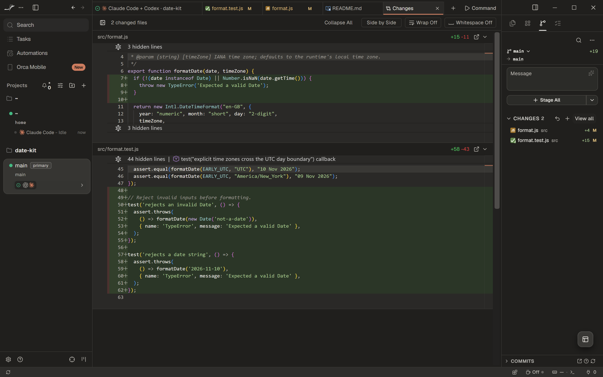
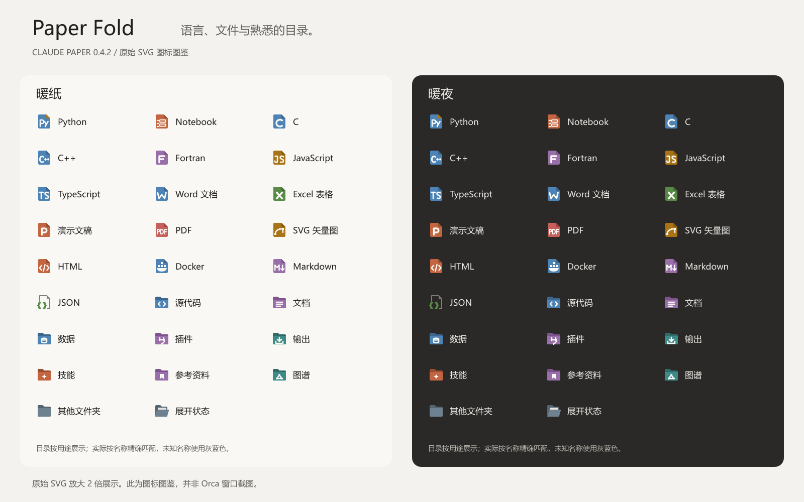
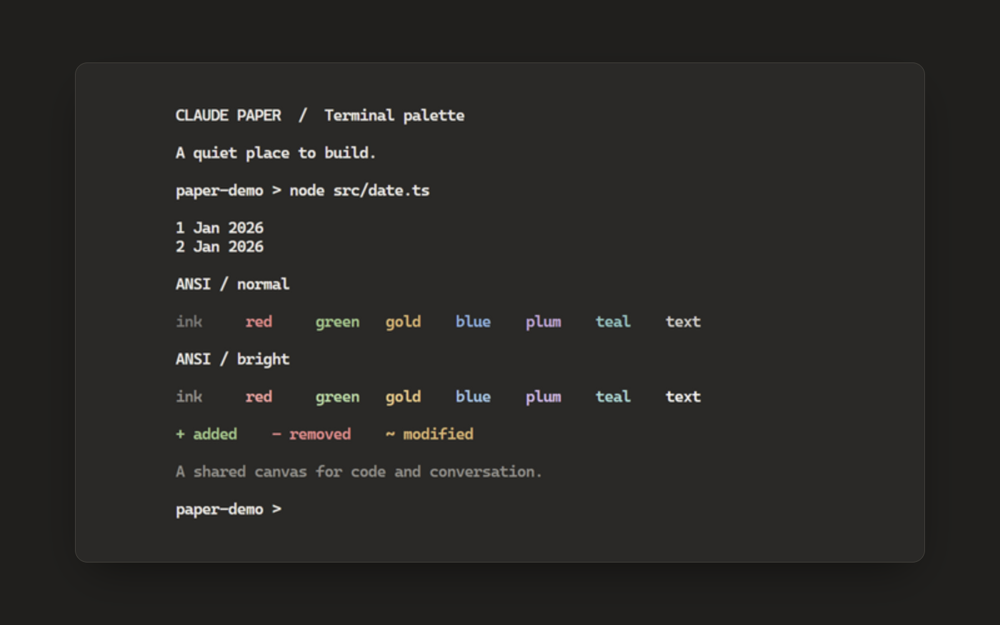

内容清楚，表面安静。
73 个应用色彩令牌，覆盖聊天、侧栏、标签、代码与差异。中性纸色区分层次，陶土强调动作，蓝色标记链接与聊天选区。


CLAUDE-INSPIRED · ORCA 主题插件
让 Orca 的对话、代码、终端与文件树，拥有连贯的暖色质感。
暖纸 · 暖夜 · 纸折图标
0.4.2 · 非官方 · MIT · 纯数据

暖纸 · 原生聊天：公开日期工具任务、完整回复与输入框
点击图片放大 ↗Orca 1.4.255 原生场景使用公开中文演示；切换语言会翻译图注，保留截图原文。图标图鉴直接渲染自 SVG 资源。 素材记录
ONE WORKSPACE, ONE VISUAL LANGUAGE
为日常编程里的每一处切换，准备同一份温度。
73 个应用色彩令牌，覆盖聊天、侧栏、标签、代码与差异。中性纸色区分层次，陶土强调动作，蓝色标记链接与聊天选区。

77 个原创 SVG、512 条映射，区分文档、代码、测试与工具。16 类常用目录均配有关闭与展开状态。

两套终端色板，覆盖 16 色 ANSI、选区、光标及光标下文字。真实执行的测试与色样，让变化可以直接比较。

COMMON FOLDERS, CLEAR RULES
按用途整理 118 个常用目录名称，涵盖技能、插件、源码、数据和输出。保留 graphify 等既有别名兼容，不要求采用特定项目结构。
Orca 按文件夹自身名称精确匹配，不区分大小写；不会识别目录内容、匹配路径或继承父目录图标。未收录的名称使用灰蓝色默认图标。下面每个名称都是独立别名：raw 和 data 各自可匹配，并不是二级路径。
| 用途分类 | 匹配名称（不区分大小写） |
|---|---|
| 技能 | skills, skill, .skills |
| 参考资料 | references, reference, ref, refs, bibliography |
| 图谱与知识 | graphify, graph, graphs, graphify-out, knowledge, knowledge-base, knowledge_graph |
| 数据 | raw, data, dataset, datasets, database, databases, db, sql |
| 源代码 | src, source, lib, app, packages, components, sources, code, core, modules, services |
| 测试 | test, tests, __tests__, spec, specs, e2e, __mocks__, fixtures, testing, integration, unit |
| 文档 | docs, doc, documentation, wiki, guides, guide, examples, tutorials, notes |
| 素材 | assets, public, static, images, img, media, icons, fonts, image, pictures, resources |
| 配置 | config, configs, .config, .vscode, .github, .idea, .husky, .devcontainer, settings |
| 脚本与工具 | scripts, script, bin, tools, utilities, utils |
| 智能体 | .claude, .codex, .cursor, .agents, prompts, agents, .gemini, .opencode |
| 依赖 | node_modules, vendor, .venv, venv, .pnpm-store, pods |
| 构建与缓存 | dist, build, out, target, .next, .nuxt, .output, .turbo, .cache, coverage |
| 版本控制 | .git, .hg, .svn |
| 插件 | plugins, plugin, extensions, extension, addons |
| 输出与报告 | output, outputs, result, results, reports, exports |
A PUBLIC EXAMPLE
公开 date-kit 示例使用原生 Intl.DateTimeFormat，无需额外依赖。中英文指南说明相同的行为和运行命令。
让 formatDate 默认使用本地时区，同时保留显式时区参数，并补充跨午夜的测试。阅读中文示例 ↗
import { formatDate } from './format.mjs';
const date = new Date('2026-11-09T23:30:00Z');
formatDate(date, 'UTC'); // 09 Nov 2026
formatDate(date, 'Asia/Shanghai'); // 10 Nov 2026同一时刻在不同时区可能属于不同日期。省略第二个参数时，使用运行环境的本地时区。
01 / 在终端运行
orca plugin install GongXLiang/Claude-paper --json02 / 设置 → 外观
应用浅色主题选择「Claude Paper · 暖纸」，深色选择「Claude Paper · 暖夜」；终端选择同名配色，文件图标主题选择「Claude Paper · 纸折图标」。
03 / 聊天跟随应用，或匹配终端
关闭「匹配终端外观」使用独立聊天细节色；开启时，聊天采用所选终端的颜色与字体。
可选 / CLAUDE CODE CLI
Orca 的终端设置提供「Match Claude Code to Terminal Theme」，可将色板同步到 Claude Code 自身界面。安装插件不会自动开启这项宿主设置。
需要 Orca 1.4.255+。字体和布局由 Orca 与使用者设置决定。WHAT CHANGES
通过公开主题接口提供颜色与图标。无运行入口，无额外能力权限。
| 范围 | Claude Paper |
|---|---|
| 应用、聊天、编辑器与差异 | 73 个色彩令牌与语法配色 |
| 文件与目录 | 纸折图标，精确目录名称与灰蓝色兜底 |
| 终端 | 背景、前景、光标、选区与 16 色 ANSI |
| CLI 的 24 位真彩色 | 由 CLI 程序控制 |
| 布局、字体、圆角、动效、按钮图标 | 由 Orca 及用户设置决定 |
#F9F8F5暖夜#2A2927陶土#D97757雾蓝#8DB5E0